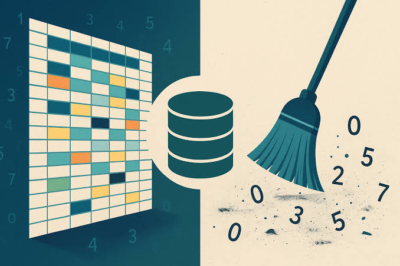

SQL Project Layoffs
Data Cleaning

A data cleaning project focused on preparing and transforming layoffs data using SQL. The project involves removing duplicates, handling missing values, standardizing data, and improving data quality for further analysis.